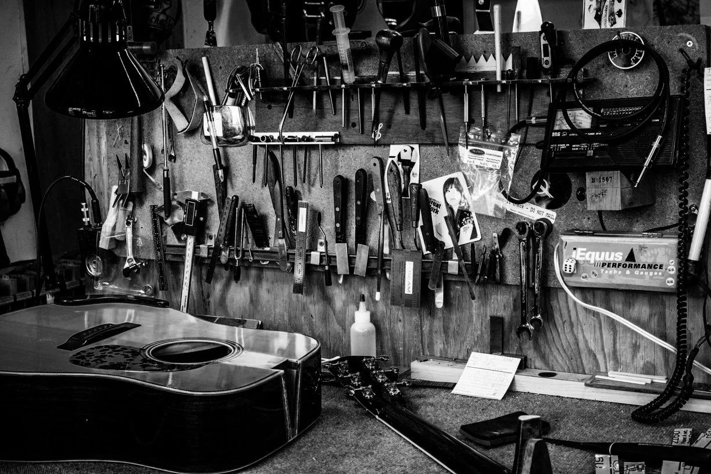
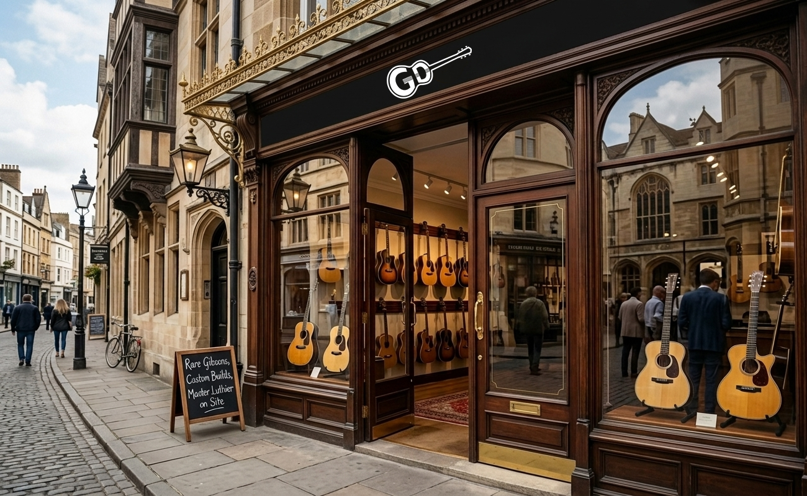

Dokan Guitar was founded by two friends in 2000, joined by their passion for music and electronics they started as a small music instruments repair shop in Amman. Excellent craftsmanship and attention to details made it the go-to place for professional players and bands in a quick time. At which we expanded our team and branches to serve the large demand. Today, we are proud to be the #1 rated shop for tone enthusiasts, music hobbiests, and new learners.

UoP IT, Airport Road, Amman, Jordan